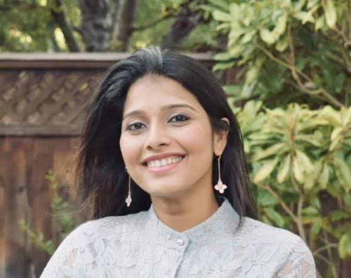

Neha Stephen

I am a junior software engineer with experience building & testing web applications using C# and the .NET framework. I have a BS in Computer Science and an MS in Computer Application. I am a natural problem solver but I also care deeply about product quality and like to spend time looking for issues, testing and improving the quality & performance of every app that I either build or maintain.
Contact Me
- Email: neha.melville@gmail.com
- GitHub Profile: GitHub
Work Experience
- Designed and developed core UI features of a Java web-based application using HTML5, CSS and JavaScript
- Developed features to localize an online flight booking .NET application using C# and MS SQL Server
- Designed and developed an end-to-end user registration .NET application
- Responsible for tracking team project tasks and bugs using JIRA
- Worked with a distributed QA team to generate test cases for testing the web applications
- Performed unit and integration testing to meet quality criteria
- Worked collaboratively with other engineers, solution architect, PM and QA to deliver projects
Education
- TrueCoders
Full Stack Software Engineering
Currently in progress. Anticipated completion in Nov. 2021
Over 500 hours of intensive, project-based training in programming languages and other technical skills, such as C#, .NET Core, SQL, Git, ASP.NET MVC, HTML, CSS, and JavaScript.
- Federal Institute of Science And Technology( FISAT),India
Master of Computer Applications (MCA) 2009 – 2012
- Naipunnya Institute of Management and Information Technology, India
Bachelor of Science (BSc)Computer Science 2006 – 2009
Licences & Certifications
- Sololearn c#
- Sololearn SQL
- LinkedIn Programming Foundations: Software Testing/QA